23 GLMM, Count Outcome: Bolous
GLMM FAQ by: Ben Bolker and others
23.1 Packages
23.1.1 CRAN
library(tidyverse) # all things tidy
library(pander) # nice looking genderal tabulations
library(furniture) # nice table1() descriptives
library(texreg) # Convert Regression Output to LaTeX or HTML Tables
library(psych) # contains some useful functions, like headTail
library(lme4) # Linear, generalized linear, & nonlinear mixed models
library(gee) # Generalized Estimating Equations
library(optimx) # Optimizers for use in lme4::glmer
library(MuMIn) # Multi-Model Inference (caluclate QIC)
library(effects) # Plotting estimated marginal means
library(interactions)
library(performance)
library(patchwork) # combining graphics23.2 Data Prep
Bolus data from Weiss 2005
Patient controlled analgesia (PCA) comparing 2 dosing regimes to self-control pain
The dataset has the number of requests per interval in 12 successive four-hourly intervals following abdominal surgery for 65 patients in a clinical trial to compare two groups (bolus/lock-out combinations).
Bolus= Large dose of medication given (usually intravenously by direct infusion injection or gravity drip) to raise blood-level concentrations to a therapeutic level
A ‘lock-out’ period followed each dose, where subject may not administer more medication.
- Lock-out time is twice as long in 2mg/dose group
- Allows for max of 30 dosages in 2mg/dose and 60 in 1mg/dose group in any 4-hour period
- No responses neared these upper limits
Variable List:
Indicators
idunique subject indicatortime11 consecutive 4-hour periods: 0, 1, 2, …, 10
Outcome or dependent variable
count# doses recorded for in that 4-hour period
Main predictor or independent variable of interest
group1mg/dose group, 2mg/dose group
23.2.1 Import
'data.frame': 715 obs. of 4 variables:
$ id : int 1 1 1 1 1 1 1 1 1 1 ...
$ group: chr "1mg" "1mg" "1mg" "1mg" ...
$ time : int 0 1 2 3 4 5 6 7 8 9 ...
$ count: int 2 2 5 2 4 0 2 4 4 4 ... id group time count
1 1 1mg 0 2
2 1 1mg 1 2
3 1 1mg 2 5
4 1 1mg 3 2
... ... <NA> ... ...
712 65 2mg 7 6
713 65 2mg 8 1
714 65 2mg 9 2
715 65 2mg 10 023.2.2 Long Format
data_long <- data_raw %>%
dplyr::mutate(id = factor(id)) %>%
dplyr::mutate(timeF = factor(time)) %>%
dplyr::mutate(group = factor(group))'data.frame': 715 obs. of 5 variables:
$ id : Factor w/ 65 levels "1","2","3","4",..: 1 1 1 1 1 1 1 1 1 1 ...
$ group: Factor w/ 2 levels "1mg","2mg": 1 1 1 1 1 1 1 1 1 1 ...
$ time : int 0 1 2 3 4 5 6 7 8 9 ...
$ count: int 2 2 5 2 4 0 2 4 4 4 ...
$ timeF: Factor w/ 11 levels "0","1","2","3",..: 1 2 3 4 5 6 7 8 9 10 ... id group time count timeF
1 1 1mg 0 2 0
2 1 1mg 1 2 1
3 1 1mg 2 5 2
4 1 1mg 3 2 3
... <NA> <NA> ... ... <NA>
712 65 2mg 7 6 7
713 65 2mg 8 1 8
714 65 2mg 9 2 9
715 65 2mg 10 0 1023.2.3 Wide Format
data_wide <- data_long %>%
dplyr::select(-timeF) %>%
tidyr::pivot_wider(names_from = time,
names_prefix = "time_",
values_from = count)
str(data_wide) # see the structuretibble [65 × 13] (S3: tbl_df/tbl/data.frame)
$ id : Factor w/ 65 levels "1","2","3","4",..: 1 2 3 4 5 6 7 8 9 10 ...
$ group : Factor w/ 2 levels "1mg","2mg": 1 1 1 1 1 1 1 1 1 1 ...
$ time_0 : int [1:65] 2 3 4 1 7 6 4 2 10 0 ...
$ time_1 : int [1:65] 2 5 8 4 7 5 7 10 9 7 ...
$ time_2 : int [1:65] 5 4 4 3 6 4 4 8 8 1 ...
$ time_3 : int [1:65] 2 4 3 3 8 8 8 17 9 9 ...
$ time_4 : int [1:65] 4 5 12 3 6 7 4 4 4 8 ...
$ time_5 : int [1:65] 0 0 1 1 5 4 4 2 2 0 ...
$ time_6 : int [1:65] 2 6 0 7 4 6 3 6 6 1 ...
$ time_7 : int [1:65] 4 3 6 5 7 5 1 8 1 5 ...
$ time_8 : int [1:65] 4 2 5 0 2 2 3 9 8 4 ...
$ time_9 : int [1:65] 4 7 3 1 5 4 4 1 5 1 ...
$ time_10: int [1:65] 2 4 5 1 0 4 6 4 5 0 ... id group time_0 time_1 time_2 time_3 time_4 time_5 time_6 time_7 time_8
1 1 1mg 2 2 5 2 4 0 2 4 4
2 2 1mg 3 5 4 4 5 0 6 3 2
3 3 1mg 4 8 4 3 12 1 0 6 5
4 4 1mg 1 4 3 3 3 1 7 5 0
5 <NA> <NA> ... ... ... ... ... ... ... ... ...
6 62 2mg 0 13 7 9 19 4 5 11 10
7 63 2mg 11 7 6 9 3 4 6 6 6
8 64 2mg 8 4 22 11 16 4 5 9 12
9 65 2mg 2 2 2 4 4 3 7 6 1
time_9 time_10
1 4 2
2 7 4
3 3 5
4 1 1
5 ... ...
6 6 9
7 6 0
8 12 7
9 2 023.3 Exploratory Data Analysis
23.3.1 Summary Statistics
23.3.1.1 Demographics and Baseline
data_wide %>%
dplyr::group_by(group) %>%
furniture::table1("Count at Baseline" = time_0,
total = TRUE,
test = TRUE,
na.rm = FALSE,
digits = 2,
output = "markdown")| Total | 1mg | 2mg | P-Value | |
|---|---|---|---|---|
| n = 65 | n = 30 | n = 35 | ||
| Count at Baseline | 0.448 | |||
| 6.03 (5.17) | 5.50 (4.70) | 6.49 (5.58) |
23.3.1.2 Status over Time
data_wide %>%
dplyr::group_by(group) %>%
furniture::table1(time_0,
time_1, time_2, time_3, time_4, time_5,
time_6, time_7, time_8, time_9, time_10,
total = TRUE,
test = TRUE,
na.rm = FALSE,
digits = 2,
output = "markdown")| Total | 1mg | 2mg | P-Value | |
|---|---|---|---|---|
| n = 65 | n = 30 | n = 35 | ||
| time_0 | 0.448 | |||
| 6.03 (5.17) | 5.50 (4.70) | 6.49 (5.58) | ||
| time_1 | 0.127 | |||
| 6.74 (6.37) | 5.43 (4.00) | 7.86 (7.75) | ||
| time_2 | 0.005 | |||
| 7.37 (6.25) | 5.13 (4.13) | 9.29 (7.12) | ||
| time_3 | 0.165 | |||
| 8.68 (5.94) | 7.57 (5.01) | 9.63 (6.56) | ||
| time_4 | 0.084 | |||
| 6.43 (4.74) | 5.33 (3.36) | 7.37 (5.54) | ||
| time_5 | 0.024 | |||
| 5.37 (4.80) | 3.93 (4.19) | 6.60 (5.00) | ||
| time_6 | 0.052 | |||
| 4.82 (4.16) | 3.73 (3.04) | 5.74 (4.78) | ||
| time_7 | 0.73 | |||
| 4.77 (3.62) | 4.60 (3.16) | 4.91 (4.01) | ||
| time_8 | 0.236 | |||
| 5.69 (4.75) | 4.93 (3.63) | 6.34 (5.51) | ||
| time_9 | 0.008 | |||
| 4.98 (4.43) | 3.50 (2.06) | 6.26 (5.45) | ||
| time_10 | 0.034 | |||
| 4.77 (4.80) | 3.47 (2.83) | 5.89 (5.81) |
23.3.2 Visualize
23.3.2.1 Person Profile Plots, by Group
data_long %>%
ggplot(aes(x = time,
y = count)) +
geom_line(aes(group = id),
color = "black",
alpha = .4) +
facet_grid(. ~ group) +
theme_bw()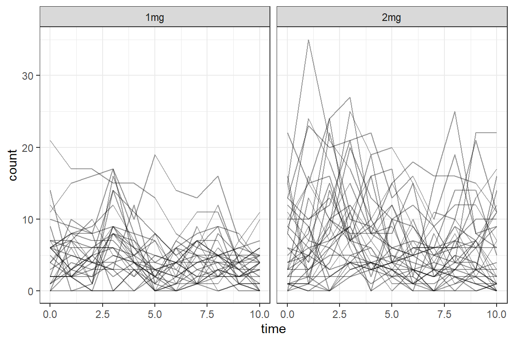
data_long %>%
ggplot(aes(x = time,
y = count)) +
geom_smooth(aes(group = id),
method = "lm",
color = "gray",
se = FALSE) +
facet_grid(. ~ group) +
theme_bw()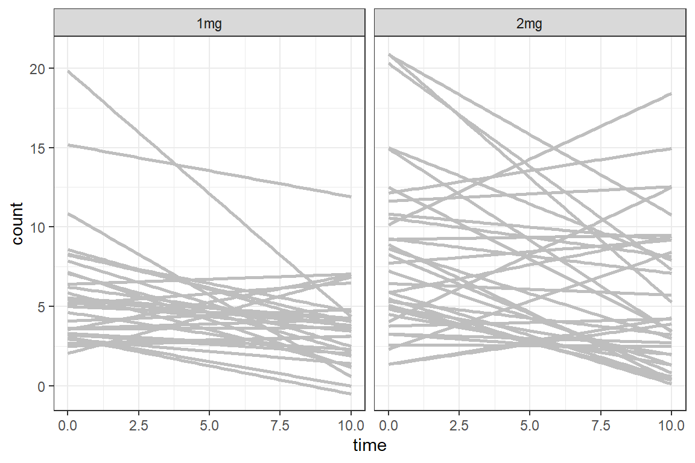
data_long %>%
ggplot(aes(x = time,
y = count)) +
geom_smooth(aes(group = id),
method = "lm",
formula = y ~ poly(x, 2),
color = "gray",
se = FALSE) +
facet_grid(. ~ group) +
theme_bw()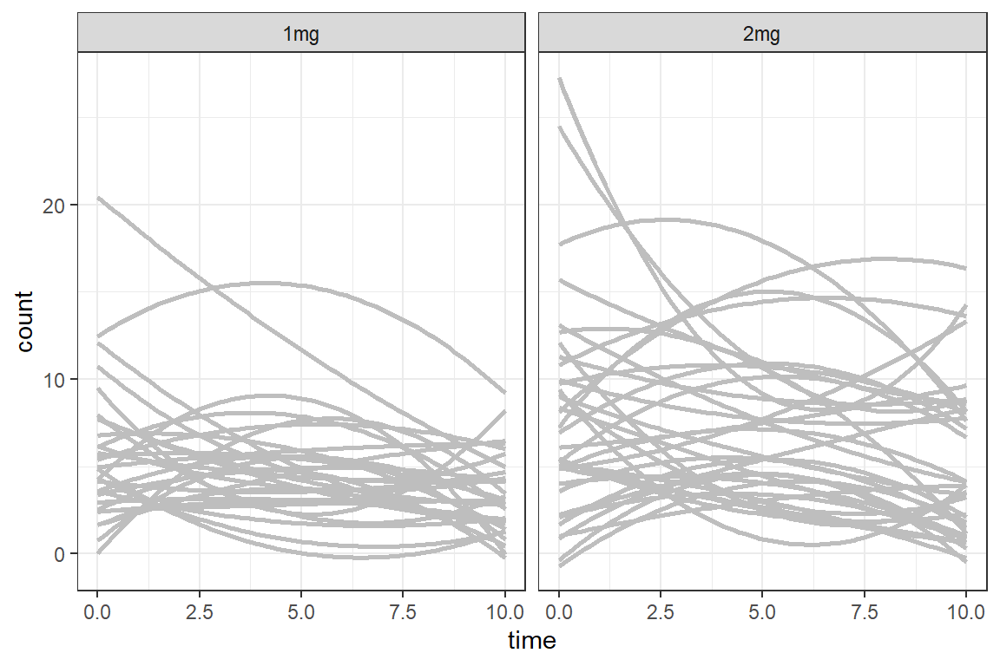
data_long %>%
ggplot(aes(x = time,
y = count)) +
geom_line(aes(group = id)) +
geom_smooth(method = "loess",
color = "blue",
se = FALSE) +
geom_smooth(method = "lm",
color = "red",
se = FALSE) +
facet_grid(. ~ group) +
theme_bw()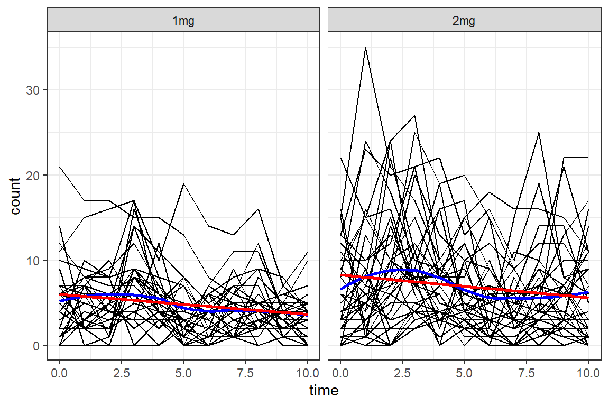
data_long %>%
ggplot(aes(x = time,
y = log(count + .1))) +
geom_line(aes(group = id)) +
geom_smooth(method = "loess",
color = "blue",
se = FALSE) +
geom_smooth(method = "lm",
color = "red",
se = FALSE) +
facet_grid(. ~ group) +
theme_bw()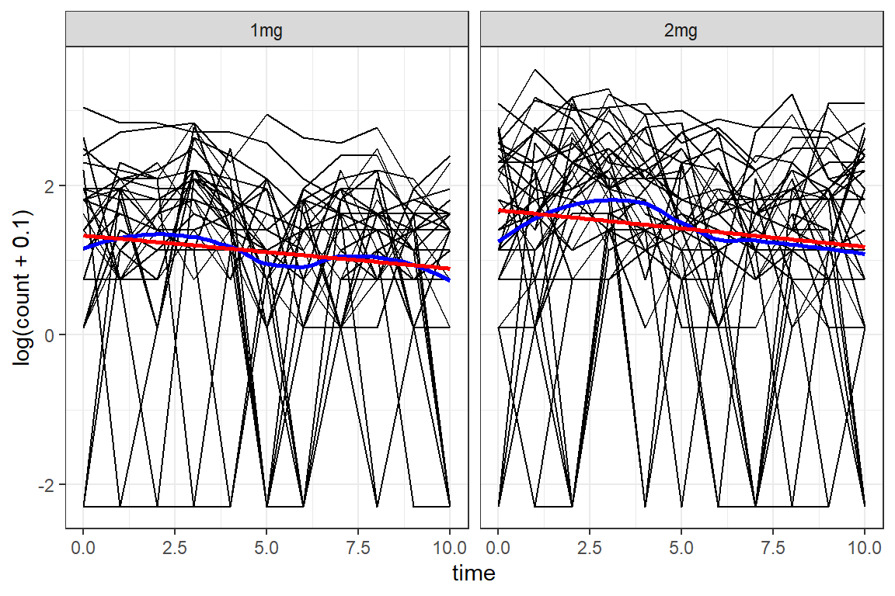
data_long %>%
ggplot(aes(x = time,
y = count)) +
geom_smooth(aes(color = "1. Loess"),
method = "loess",
se = FALSE) +
geom_smooth(aes(color = "2. Linear"),
method = "lm",
se = FALSE) +
geom_smooth(aes(color = "3. Quadratic"),
method = "lm",
formula = y ~ poly(x, 2),
se = FALSE) +
geom_smooth(aes(color = "4. Cubic"),
method = "lm",
formula = y ~ poly(x, 3),
se = FALSE) +
facet_grid(. ~ group) +
theme_bw() +
labs(color = "Type of Smoother") +
theme(legend.position = "bottom",
legend.key.width = unit(1.5, "cm"))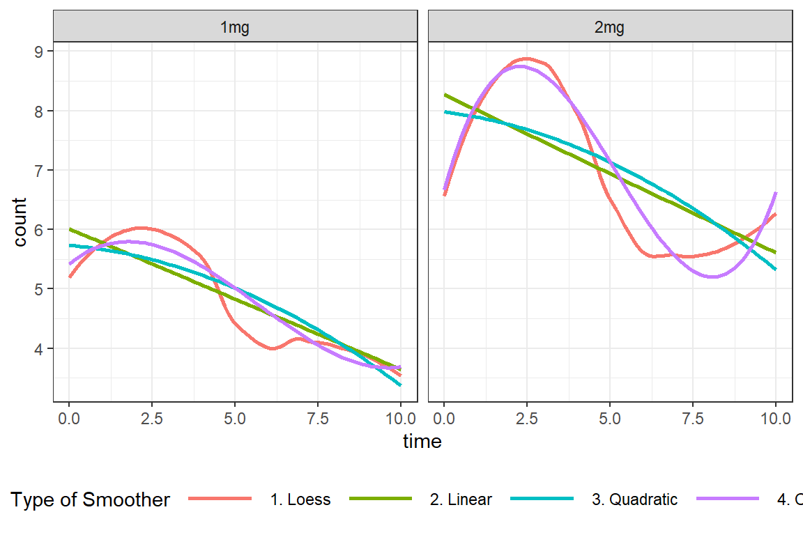
23.3.2.2 Means over Time, BY Group
data_long %>%
dplyr::group_by(group, timeF) %>%
dplyr::summarise(M = mean(count)) %>%
ggplot(aes(x = timeF,
y = M,
group = group,
color = group)) +
geom_point() +
geom_line() +
theme_bw() +
labs(x = "Four-week Intervals",
y = "Sample Mean Count",
color = "Dose") 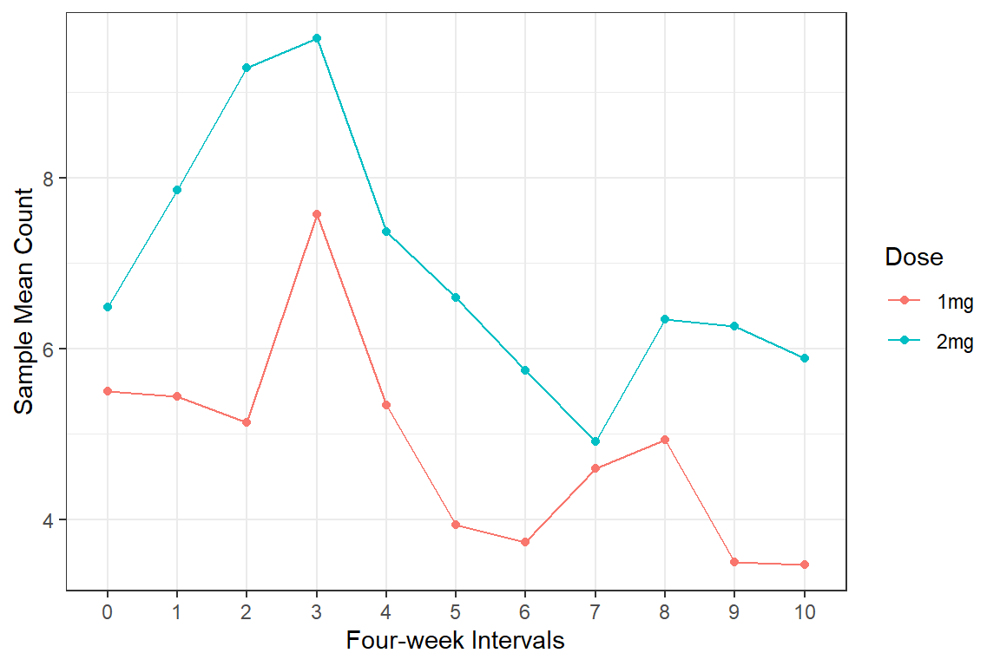
data_long %>%
dplyr::group_by(group, timeF) %>%
dplyr::summarise(M = mean(log(count + .1))) %>%
ggplot(aes(x = timeF,
y = M,
group = group,
color = group)) +
geom_point() +
geom_line() +
theme_bw() +
labs(x = "Four-week Intervals",
y = "Sample Mean Count",
color = "Dose") 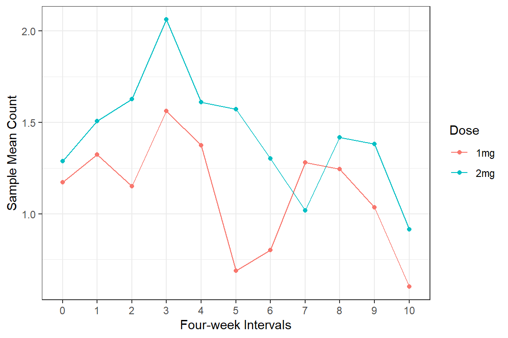
23.4 GEE Analysis
23.4.1 Fit Various Correlation Structures
23.4.1.1 Exchangable
mod_gee_ex <- gee::gee(count ~ group + time + I(time^2),
id = id,
data = data_long,
family = poisson(link = "log"),
corstr = 'exchangeable')(Intercept) group2mg time I(time^2)
1.72189 0.36280 -0.00222 -0.00417
GEE: GENERALIZED LINEAR MODELS FOR DEPENDENT DATA
gee S-function, version 4.13 modified 98/01/27 (1998)
Model:
Link: Logarithm
Variance to Mean Relation: Poisson
Correlation Structure: Exchangeable
Call:
gee::gee(formula = count ~ group + time + I(time^2), id = id,
data = data_long, family = poisson(link = "log"), corstr = "exchangeable")
Summary of Residuals:
Min 1Q Median 3Q Max
-7.976 -3.561 -0.925 2.191 27.075
Coefficients:
Estimate Naive S.E. Naive z Robust S.E. Robust z
(Intercept) 1.73383 0.12029 14.4136 0.11764 14.7379
group2mg 0.34258 0.14083 2.4326 0.14009 2.4454
time -0.00222 0.02699 -0.0824 0.03099 -0.0718
I(time^2) -0.00417 0.00269 -1.5502 0.00273 -1.5249
Estimated Scale Parameter: 3.99
Number of Iterations: 2
Working Correlation
[,1] [,2] [,3] [,4] [,5] [,6] [,7] [,8] [,9] [,10] [,11]
[1,] 1.000 0.418 0.418 0.418 0.418 0.418 0.418 0.418 0.418 0.418 0.418
[2,] 0.418 1.000 0.418 0.418 0.418 0.418 0.418 0.418 0.418 0.418 0.418
[3,] 0.418 0.418 1.000 0.418 0.418 0.418 0.418 0.418 0.418 0.418 0.418
[4,] 0.418 0.418 0.418 1.000 0.418 0.418 0.418 0.418 0.418 0.418 0.418
[5,] 0.418 0.418 0.418 0.418 1.000 0.418 0.418 0.418 0.418 0.418 0.418
[6,] 0.418 0.418 0.418 0.418 0.418 1.000 0.418 0.418 0.418 0.418 0.418
[7,] 0.418 0.418 0.418 0.418 0.418 0.418 1.000 0.418 0.418 0.418 0.418
[8,] 0.418 0.418 0.418 0.418 0.418 0.418 0.418 1.000 0.418 0.418 0.418
[9,] 0.418 0.418 0.418 0.418 0.418 0.418 0.418 0.418 1.000 0.418 0.418
[10,] 0.418 0.418 0.418 0.418 0.418 0.418 0.418 0.418 0.418 1.000 0.418
[11,] 0.418 0.418 0.418 0.418 0.418 0.418 0.418 0.418 0.418 0.418 1.00023.4.1.2 Auto-regressive (correlation decay over time)
mod_gee_ar <- gee::gee(count ~ group + time + I(time^2),
id = id,
data = data_long,
family = poisson(link = "log"),
corstr = "AR-M",
Mv = 1) (Intercept) group2mg time I(time^2)
1.72189 0.36280 -0.00222 -0.00417
GEE: GENERALIZED LINEAR MODELS FOR DEPENDENT DATA
gee S-function, version 4.13 modified 98/01/27 (1998)
Model:
Link: Logarithm
Variance to Mean Relation: Poisson
Correlation Structure: AR-M , M = 1
Call:
gee::gee(formula = count ~ group + time + I(time^2), id = id,
data = data_long, family = poisson(link = "log"), corstr = "AR-M",
Mv = 1)
Summary of Residuals:
Min 1Q Median 3Q Max
-7.678 -3.556 -0.963 2.322 27.360
Coefficients:
Estimate Naive S.E. Naive z Robust S.E. Robust z
(Intercept) 1.66118 0.11438 14.523 0.12214 13.601
group2mg 0.35559 0.10527 3.378 0.13694 2.597
time 0.02250 0.04204 0.535 0.03265 0.689
I(time^2) -0.00586 0.00412 -1.424 0.00294 -1.996
Estimated Scale Parameter: 4.01
Number of Iterations: 2
Working Correlation
[,1] [,2] [,3] [,4] [,5] [,6] [,7] [,8] [,9]
[1,] 1.00000 0.53366 0.28479 0.1520 0.0811 0.0433 0.0231 0.0123 0.00658
[2,] 0.53366 1.00000 0.53366 0.2848 0.1520 0.0811 0.0433 0.0231 0.01233
[3,] 0.28479 0.53366 1.00000 0.5337 0.2848 0.1520 0.0811 0.0433 0.02310
[4,] 0.15198 0.28479 0.53366 1.0000 0.5337 0.2848 0.1520 0.0811 0.04328
[5,] 0.08110 0.15198 0.28479 0.5337 1.0000 0.5337 0.2848 0.1520 0.08110
[6,] 0.04328 0.08110 0.15198 0.2848 0.5337 1.0000 0.5337 0.2848 0.15198
[7,] 0.02310 0.04328 0.08110 0.1520 0.2848 0.5337 1.0000 0.5337 0.28479
[8,] 0.01233 0.02310 0.04328 0.0811 0.1520 0.2848 0.5337 1.0000 0.53366
[9,] 0.00658 0.01233 0.02310 0.0433 0.0811 0.1520 0.2848 0.5337 1.00000
[10,] 0.00351 0.00658 0.01233 0.0231 0.0433 0.0811 0.1520 0.2848 0.53366
[11,] 0.00187 0.00351 0.00658 0.0123 0.0231 0.0433 0.0811 0.1520 0.28479
[,10] [,11]
[1,] 0.00351 0.00187
[2,] 0.00658 0.00351
[3,] 0.01233 0.00658
[4,] 0.02310 0.01233
[5,] 0.04328 0.02310
[6,] 0.08110 0.04328
[7,] 0.15198 0.08110
[8,] 0.28479 0.15198
[9,] 0.53366 0.28479
[10,] 1.00000 0.53366
[11,] 0.53366 1.0000023.4.1.3 Unstructured
mod_gee_un <- gee::gee(count ~ group + time + I(time^2),
id = id,
data = data_long,
family = poisson(link = "log"),
corstr = "unstructured") (Intercept) group2mg time I(time^2)
1.72189 0.36280 -0.00222 -0.00417
GEE: GENERALIZED LINEAR MODELS FOR DEPENDENT DATA
gee S-function, version 4.13 modified 98/01/27 (1998)
Model:
Link: Logarithm
Variance to Mean Relation: Poisson
Correlation Structure: Unstructured
Call:
gee::gee(formula = count ~ group + time + I(time^2), id = id,
data = data_long, family = poisson(link = "log"), corstr = "unstructured")
Summary of Residuals:
Min 1Q Median 3Q Max
-6.666 -2.698 -0.241 2.998 28.438
Coefficients:
Estimate Naive S.E. Naive z Robust S.E. Robust z
(Intercept) 1.56265 0.13682 11.42 0.13584 11.50
group2mg 0.28409 0.15148 1.88 0.14155 2.01
time 0.04398 0.03162 1.39 0.04002 1.10
I(time^2) -0.00942 0.00254 -3.70 0.00371 -2.54
Estimated Scale Parameter: 4.88
Number of Iterations: 11
Working Correlation
[,1] [,2] [,3] [,4] [,5] [,6] [,7] [,8] [,9] [,10] [,11]
[1,] 1.0000 0.536 0.505 0.445 0.196 0.250 0.241 0.0156 0.252 0.241 0.219
[2,] 0.5364 1.000 0.849 0.619 0.469 0.330 0.309 0.2289 0.612 0.527 0.445
[3,] 0.5054 0.849 1.000 0.695 0.513 0.463 0.319 0.2979 0.788 0.555 0.593
[4,] 0.4452 0.619 0.695 1.000 0.606 0.431 0.407 0.3154 0.611 0.645 0.737
[5,] 0.1958 0.469 0.513 0.606 1.000 0.379 0.278 0.3515 0.537 0.441 0.436
[6,] 0.2503 0.330 0.463 0.431 0.379 1.000 0.413 0.3718 0.479 0.442 0.633
[7,] 0.2412 0.309 0.319 0.407 0.278 0.413 1.000 0.2820 0.261 0.291 0.404
[8,] 0.0156 0.229 0.298 0.315 0.351 0.372 0.282 1.0000 0.494 0.233 0.323
[9,] 0.2516 0.612 0.788 0.611 0.537 0.479 0.261 0.4936 1.000 0.456 0.493
[10,] 0.2408 0.527 0.555 0.645 0.441 0.442 0.291 0.2334 0.456 1.000 0.738
[11,] 0.2186 0.445 0.593 0.737 0.436 0.633 0.404 0.3229 0.493 0.738 1.00023.4.2 Compare Corelation Structures
23.4.2.1 QIC: Model Fit
MuMIn::model.sel(mod_gee_ex,
mod_gee_ar,
mod_gee_un,
rank = "QIC") #sorts the best to the TOP, uses QIC(I) to choose corelation structureModel selection table
(Intrc) group time time^2 corstr Mv qLik QIC delta weight
mod_gee_ex 1.73 + -0.00222 -0.00417 ex 3464 -6904 0.00 0.432
mod_gee_ar 1.66 + 0.02250 -0.00587 AR-M 1 3462 -6904 0.18 0.395
mod_gee_un 1.56 + 0.04398 -0.00942 un 3407 -6902 1.83 0.173
Abbreviations:
corstr: ex = 'exchangeable', un = 'unstructured'
Models ranked by QIC(x) # Comparison of Model Performance Indices
Name | Model | RMSE | Sigma | Score_log | Score_spherical | Performance-Score
------------------------------------------------------------------------------------
mod_gee_ex | gee | 4.996 | 5.010 | -3.535 | 0.030 | 76.57%
mod_gee_ar | gee | 4.998 | 5.012 | -3.537 | 0.030 | 72.74%
mod_gee_un | gee | 5.081 | 5.096 | -3.614 | 0.030 | 25.00%23.4.2.2 Model Parameter Table
texreg::knitreg(list(extract_gee_exp(mod_gee_ex),
extract_gee_exp(mod_gee_ar),
extract_gee_exp(mod_gee_un)),
custom.model.names = c("Exchangable",
"AutoRegressive",
"Unstructured"),
caption = "GEE: Main Effects Only, with Quadratic Time",
single.row = TRUE,
ci.test = 1)| Exchangable | AutoRegressive | Unstructured | |
|---|---|---|---|
| (Intercept) | 5.66 [4.50; 7.13]* | 5.27 [4.14; 6.69]* | 4.77 [3.66; 6.23]* |
| group2mg | 1.41 [1.07; 1.85]* | 1.43 [1.09; 1.87]* | 1.33 [1.01; 1.75]* |
| time | 1.00 [0.94; 1.06] | 1.02 [0.96; 1.09] | 1.04 [0.97; 1.13] |
| time^2 | 1.00 [0.99; 1.00] | 0.99 [0.99; 1.00]* | 0.99 [0.98; 1.00]* |
| Dispersion | 3.99 | 4.01 | 4.88 |
| * Null hypothesis value outside the confidence interval. | |||
23.4.3 Add Interaction Terms
mod_gee_ar2 <- gee::gee(count ~ group*time + group*I(time^2),
id = id,
data = data_long,
family = poisson(link = "log"),
corstr = "AR-M",
Mv = 1) (Intercept) group2mg time I(time^2)
1.740051 0.333462 0.000475 -0.005176
group2mg:time group2mg:I(time^2)
-0.004097 0.001582
GEE: GENERALIZED LINEAR MODELS FOR DEPENDENT DATA
gee S-function, version 4.13 modified 98/01/27 (1998)
Model:
Link: Logarithm
Variance to Mean Relation: Poisson
Correlation Structure: AR-M , M = 1
Call:
gee::gee(formula = count ~ group * time + group * I(time^2),
id = id, data = data_long, family = poisson(link = "log"),
corstr = "AR-M", Mv = 1)
Summary of Residuals:
Min 1Q Median 3Q Max
-7.527 -3.466 -0.779 2.266 27.576
Coefficients:
Estimate Naive S.E. Naive z Robust S.E. Robust z
(Intercept) 1.722048 0.14876 11.5764 0.14094 12.2179
group2mg 0.256828 0.19147 1.3414 0.19142 1.3417
time 0.007745 0.06809 0.1137 0.05263 0.1472
I(time^2) -0.005709 0.00675 -0.8456 0.00489 -1.1674
group2mg:time 0.024064 0.08661 0.2779 0.06720 0.3581
group2mg:I(time^2) -0.000299 0.00852 -0.0351 0.00612 -0.0489
Estimated Scale Parameter: 4.01
Number of Iterations: 3
Working Correlation
[,1] [,2] [,3] [,4] [,5] [,6] [,7] [,8] [,9]
[1,] 1.00000 0.53456 0.28575 0.1528 0.0817 0.0436 0.0233 0.0125 0.00667
[2,] 0.53456 1.00000 0.53456 0.2858 0.1528 0.0817 0.0436 0.0233 0.01247
[3,] 0.28575 0.53456 1.00000 0.5346 0.2858 0.1528 0.0817 0.0436 0.02333
[4,] 0.15275 0.28575 0.53456 1.0000 0.5346 0.2858 0.1528 0.0817 0.04365
[5,] 0.08166 0.15275 0.28575 0.5346 1.0000 0.5346 0.2858 0.1528 0.08166
[6,] 0.04365 0.08166 0.15275 0.2858 0.5346 1.0000 0.5346 0.2858 0.15275
[7,] 0.02333 0.04365 0.08166 0.1528 0.2858 0.5346 1.0000 0.5346 0.28575
[8,] 0.01247 0.02333 0.04365 0.0817 0.1528 0.2858 0.5346 1.0000 0.53456
[9,] 0.00667 0.01247 0.02333 0.0436 0.0817 0.1528 0.2858 0.5346 1.00000
[10,] 0.00356 0.00667 0.01247 0.0233 0.0436 0.0817 0.1528 0.2858 0.53456
[11,] 0.00191 0.00356 0.00667 0.0125 0.0233 0.0436 0.0817 0.1528 0.28575
[,10] [,11]
[1,] 0.00356 0.00191
[2,] 0.00667 0.00356
[3,] 0.01247 0.00667
[4,] 0.02333 0.01247
[5,] 0.04365 0.02333
[6,] 0.08166 0.04365
[7,] 0.15275 0.08166
[8,] 0.28575 0.15275
[9,] 0.53456 0.28575
[10,] 1.00000 0.53456
[11,] 0.53456 1.00000 QIC
mod_gee_ar -6900
mod_gee_ar2 -6897texreg::knitreg(list(extract_gee_exp(mod_gee_ar),
extract_gee_exp(mod_gee_ar2)),
single.row = TRUE,
ci.test = 1)<table class="texreg" style="margin: 10px auto;border-collapse: collapse;border-spacing: 0px;caption-side: bottom;color: #000000;border-top: 2px solid #000000;">
<caption>Statistical models</caption>
<thead>
<tr>
<th style="padding-left: 5px;padding-right: 5px;"> </th>
<th style="padding-left: 5px;padding-right: 5px;">Model 1</th>
<th style="padding-left: 5px;padding-right: 5px;">Model 2</th>
</tr>
</thead>
<tbody>
<tr style="border-top: 1px solid #000000;">
<td style="padding-left: 5px;padding-right: 5px;">(Intercept)</td>
<td style="padding-left: 5px;padding-right: 5px;">5.27 [4.14; 6.69]<sup>*</sup></td>
<td style="padding-left: 5px;padding-right: 5px;">5.60 [4.25; 7.38]<sup>*</sup></td>
</tr>
<tr>
<td style="padding-left: 5px;padding-right: 5px;">group2mg</td>
<td style="padding-left: 5px;padding-right: 5px;">1.43 [1.09; 1.87]<sup>*</sup></td>
<td style="padding-left: 5px;padding-right: 5px;">1.29 [0.89; 1.88]</td>
</tr>
<tr>
<td style="padding-left: 5px;padding-right: 5px;">time</td>
<td style="padding-left: 5px;padding-right: 5px;">1.02 [0.96; 1.09]</td>
<td style="padding-left: 5px;padding-right: 5px;">1.01 [0.91; 1.12]</td>
</tr>
<tr>
<td style="padding-left: 5px;padding-right: 5px;">time^2</td>
<td style="padding-left: 5px;padding-right: 5px;">0.99 [0.99; 1.00]<sup>*</sup></td>
<td style="padding-left: 5px;padding-right: 5px;">0.99 [0.98; 1.00]</td>
</tr>
<tr>
<td style="padding-left: 5px;padding-right: 5px;">group2mg:time</td>
<td style="padding-left: 5px;padding-right: 5px;"> </td>
<td style="padding-left: 5px;padding-right: 5px;">1.02 [0.90; 1.17]</td>
</tr>
<tr>
<td style="padding-left: 5px;padding-right: 5px;">group2mg:time^2</td>
<td style="padding-left: 5px;padding-right: 5px;"> </td>
<td style="padding-left: 5px;padding-right: 5px;">1.00 [0.99; 1.01]</td>
</tr>
<tr style="border-top: 1px solid #000000;">
<td style="padding-left: 5px;padding-right: 5px;">Dispersion</td>
<td style="padding-left: 5px;padding-right: 5px;">4.01</td>
<td style="padding-left: 5px;padding-right: 5px;">4.01</td>
</tr>
</tbody>
<tfoot>
<tr>
<td style="font-size: 0.8em;" colspan="3"><sup>*</sup> Null hypothesis value outside the confidence interval.</td>
</tr>
</tfoot>
</table>23.4.4 Visualize Best Model
23.4.4.1 Model Parameter Table
texreg::knitreg(extract_gee_exp(mod_gee_ar),
caption = "GEE: Final Model (auto regressive)",
single.row = TRUE,
ci.test = 1)| Model 1 | |
|---|---|
| (Intercept) | 5.27 [4.14; 6.69]* |
| group2mg | 1.43 [1.09; 1.87]* |
| time | 1.02 [0.96; 1.09] |
| time^2 | 0.99 [0.99; 1.00]* |
| Dispersion | 4.01 |
| * 1 outside the confidence interval. | |
23.4.4.2 Refit via geepack::geeglm()
mod_geeglm_ar <- geepack::geeglm(count ~ group + time + I(time^2),
id = id,
data = data_long,
family = poisson(link = "log"),
corstr = "ar1")
summary(mod_geeglm_ar)
Call:
geepack::geeglm(formula = count ~ group + time + I(time^2), family = poisson(link = "log"),
data = data_long, id = id, corstr = "ar1")
Coefficients:
Estimate Std.err Wald Pr(>|W|)
(Intercept) 1.63046 0.12861 160.71 <2e-16 ***
group2mg 0.34575 0.13880 6.21 0.013 *
time 0.03588 0.03558 1.02 0.313
I(time^2) -0.00665 0.00321 4.31 0.038 *
---
Signif. codes: 0 '***' 0.001 '**' 0.01 '*' 0.05 '.' 0.1 ' ' 1
Correlation structure = ar1
Estimated Scale Parameters:
Estimate Std.err
(Intercept) 4 0.435
Link = identity
Estimated Correlation Parameters:
Estimate Std.err
alpha 0.775 0.0333
Number of clusters: 65 Maximum cluster size: 11 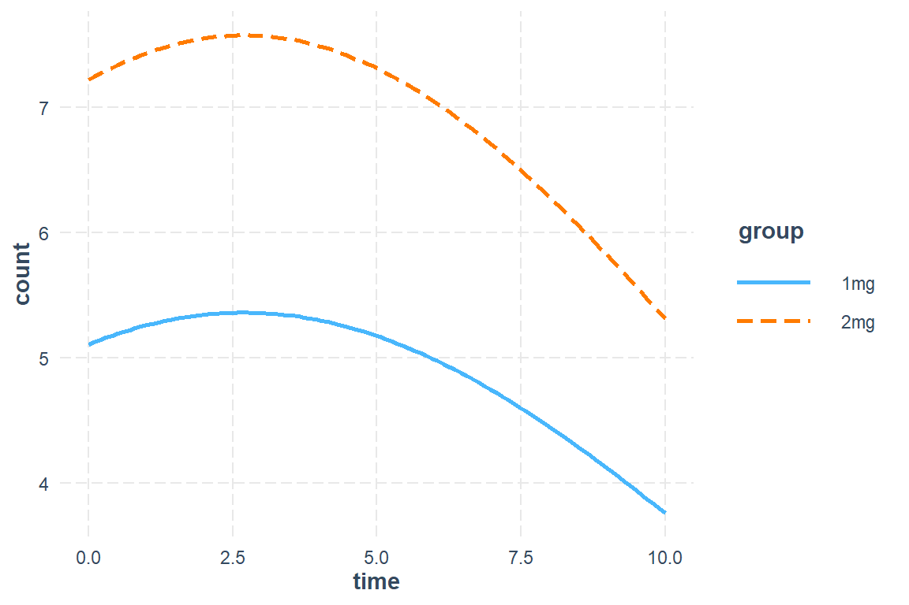
23.4.4.3 Predict over a Grid
Estimated Marginal Mean Counts
expand.grid(time = 0:10,
group = levels(data_long$group)) %>%
dplyr::mutate(fit = predict(mod_geeglm_ar,
newdata = .,
type = "response")) %>%
tidyr::spread(key = group,
value = fit) time 1mg 2mg
1 0 5.11 7.22
2 1 5.26 7.43
3 2 5.34 7.55
4 3 5.36 7.57
5 4 5.30 7.49
6 5 5.17 7.31
7 6 4.98 7.04
8 7 4.74 6.69
9 8 4.44 6.28
10 9 4.11 5.81
11 10 3.76 5.3123.4.4.4 Plot Estimated Marginal Means
expand.grid(time = 0:10,
group = levels(data_long$group)) %>%
dplyr::mutate(fit = predict(mod_geeglm_ar,
newdata = .,
type = "response")) %>%
ggplot(aes(x = time,
y = fit,
color = fct_rev(group))) +
geom_point() +
geom_line() +
theme_bw() +
labs(x = "Four-week Intervals",
y = "Estimated Populaton Mean Count",
color = "Dose") +
scale_x_continuous(breaks = 0:10)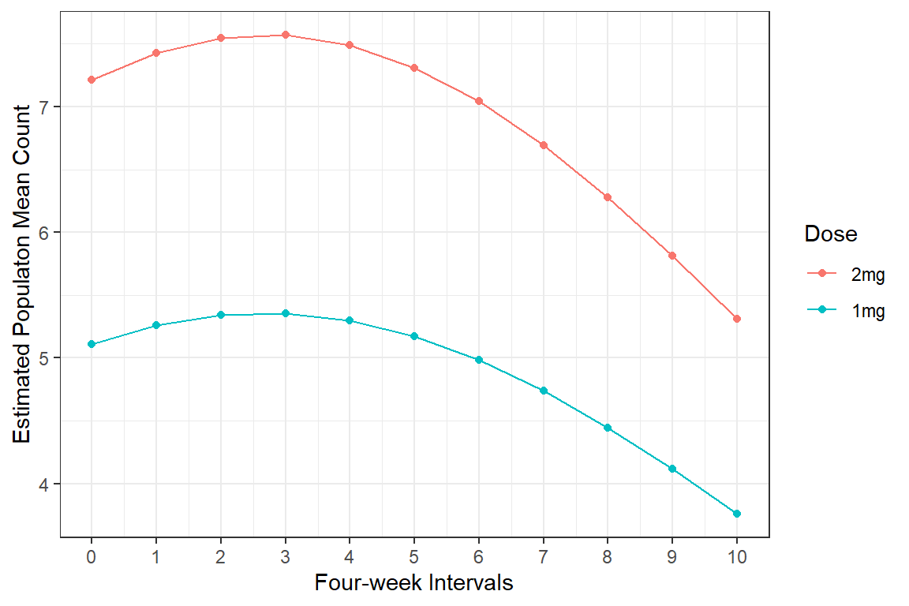
23.5 GLMM Analysis
23.5.1 RI: Random Intercepts Only
mod_glmer_ri <- lme4::glmer(count ~ group + I(time/4) + I((time/4)^2) + (1|id),
data = data_long,
family = poisson(link = "log"))
summary(mod_glmer_ri)Generalized linear mixed model fit by maximum likelihood (Laplace
Approximation) [glmerMod]
Family: poisson ( log )
Formula: count ~ group + I(time/4) + I((time/4)^2) + (1 | id)
Data: data_long
AIC BIC logLik -2*log(L) df.resid
4061 4083 -2025 4051 710
Scaled residuals:
Min 1Q Median 3Q Max
-3.109 -1.092 -0.150 0.814 5.628
Random effects:
Groups Name Variance Std.Dev.
id (Intercept) 0.283 0.532
Number of obs: 715, groups: id, 65
Fixed effects:
Estimate Std. Error z value Pr(>|z|)
(Intercept) 1.6099 0.1062 15.15 <2e-16 ***
group2mg 0.3110 0.1371 2.27 0.023 *
I(time/4) -0.0089 0.0706 -0.13 0.900
I((time/4)^2) -0.0667 0.0281 -2.37 0.018 *
---
Signif. codes: 0 '***' 0.001 '**' 0.01 '*' 0.05 '.' 0.1 ' ' 1
Correlation of Fixed Effects:
(Intr) grp2mg I(t/4)
group2mg -0.700
I(time/4) -0.276 0.000
I((tm/4)^2) 0.226 0.000 -0.96023.5.2 RIAS: Random Intercepts and Slopes
mod_glmer_rias <- lme4::glmer(count ~ group + I(time/4) + I((time/4)^2) + (I(time/4)|id),
data = data_long,
family = poisson(link = "log"))
summary(mod_glmer_rias)Generalized linear mixed model fit by maximum likelihood (Laplace
Approximation) [glmerMod]
Family: poisson ( log )
Formula: count ~ group + I(time/4) + I((time/4)^2) + (I(time/4) | id)
Data: data_long
AIC BIC logLik -2*log(L) df.resid
3964 3996 -1975 3950 708
Scaled residuals:
Min 1Q Median 3Q Max
-3.045 -0.927 -0.142 0.682 4.886
Random effects:
Groups Name Variance Std.Dev. Corr
id (Intercept) 0.3147 0.561
I(time/4) 0.0825 0.287 -0.36
Number of obs: 715, groups: id, 65
Fixed effects:
Estimate Std. Error z value Pr(>|z|)
(Intercept) 1.5993 0.1093 14.63 <2e-16 ***
group2mg 0.3002 0.1360 2.21 0.0274 *
I(time/4) 0.0452 0.0807 0.56 0.5751
I((time/4)^2) -0.1035 0.0286 -3.62 0.0003 ***
---
Signif. codes: 0 '***' 0.001 '**' 0.01 '*' 0.05 '.' 0.1 ' ' 1
Correlation of Fixed Effects:
(Intr) grp2mg I(t/4)
group2mg -0.679
I(time/4) -0.363 0.005
I((tm/4)^2) 0.224 0.001 -0.848Data: data_long
Models:
mod_glmer_ri: count ~ group + I(time/4) + I((time/4)^2) + (1 | id)
mod_glmer_rias: count ~ group + I(time/4) + I((time/4)^2) + (I(time/4) | id)
npar AIC BIC logLik -2*log(L) Chisq Df Pr(>Chisq)
mod_glmer_ri 5 4061 4083 -2025 4051
mod_glmer_rias 7 3964 3996 -1975 3950 100 2 <2e-16 ***
---
Signif. codes: 0 '***' 0.001 '**' 0.01 '*' 0.05 '.' 0.1 ' ' 1NOTE: THI IS NO LONER WROKING???
23.5.3 RAIS: Add Interaction
See the GLMM - Optimizers page for more information on convergence problems.
mod_glmer_rias2 <- lme4::glmer(count ~ group*I(time/4) + group*I((time/4)^2) + ( I(time/4)|id ),
data = data_long,
control = glmerControl(optimizer ="Nelder_Mead"), # convergence issues resolved
family = poisson(link = "log")) Data: data_long
Models:
mod_glmer_rias: count ~ group + I(time/4) + I((time/4)^2) + (I(time/4) | id)
mod_glmer_rias2: count ~ group * I(time/4) + group * I((time/4)^2) + (I(time/4) | id)
npar AIC BIC logLik -2*log(L) Chisq Df Pr(>Chisq)
mod_glmer_rias 7 3964 3996 -1975 3950
mod_glmer_rias2 9 3968 4009 -1975 3950 0.14 2 0.9323.5.4 Visualize Best Model
23.5.4.1 Model Parameter Table
# texreg::knitreg(list(extract_glmer_exp(mod_glmer_rias)),
# caption = "GLMM: Final Model",
# single.row = TRUE,
# ci.test = 1)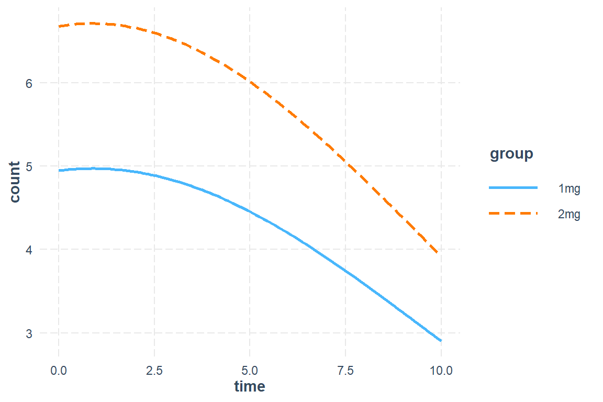
23.5.4.2 Estimated Marginal Means
effects::Effect(focal.predictors = c("group", "time"),
xlevels = list(time = 0:10),
mod = mod_glmer_rias) %>%
data.frame %>%
dplyr::select(group, time, fit) %>%
tidyr::spread(key = group,
value = fit,
sep = "_") time group_1mg group_2mg
1 0 4.95 6.68
2 1 4.97 6.71
3 2 4.93 6.66
4 3 4.83 6.52
5 4 4.67 6.30
6 5 4.46 6.02
7 6 4.20 5.67
8 7 3.90 5.27
9 8 3.58 4.84
10 9 3.25 4.38
11 10 2.90 3.9223.5.4.3 Plot Estimated Marginal Means
effects::Effect(focal.predictors = c("group", "time"),
xlevels = list(time = seq(from = 0, to = 10, by = .25)),
mod = mod_glmer_rias) %>%
data.frame %>%
ggplot(aes(x = time,
y = fit)) +
geom_ribbon(aes(ymin = fit - se,
ymax = fit + se,
fill = group),
alpha = .3) +
geom_line(aes(color = group)) +
theme_bw() +
labs(x = "Four-week Intervals",
y = "Estimated Populaton Mean Count",
color = "Dose",
fill = "Dose") +
scale_x_continuous(breaks = 0:10)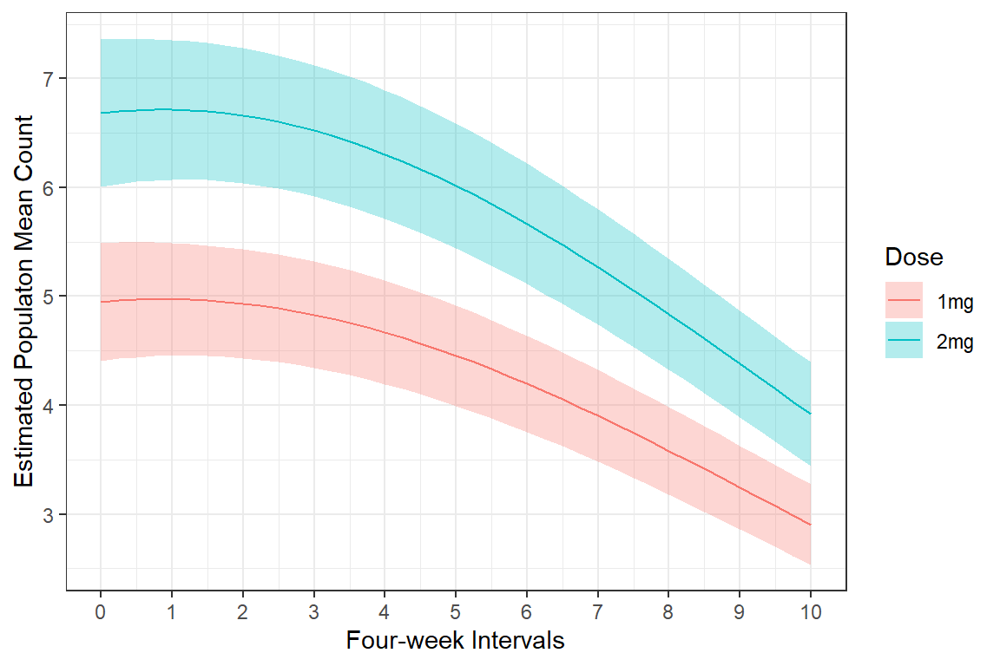
data_long %>%
dplyr::mutate(fit = predict(mod_glmer_rias,
newdata = .,
type = "response")) %>%
ggplot(aes(x = time,
y = fit)) +
geom_line(aes(group = id)) +
facet_grid(.~ group) +
theme_bw()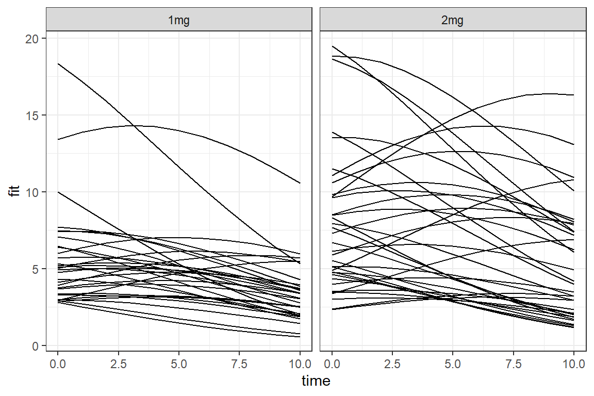